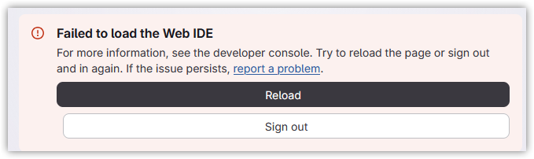
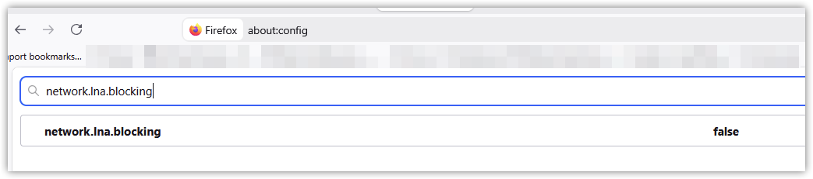
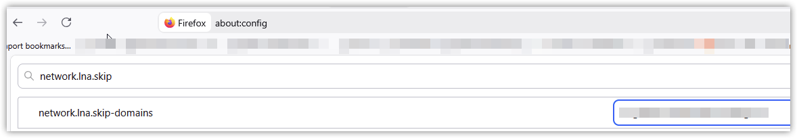
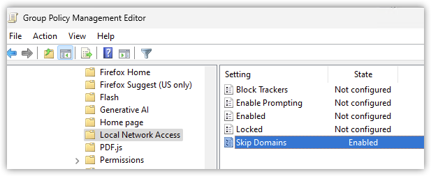

Gitlab Web IDE does not work on self-hosted Gitlab with a private IP using Firefox
Published 2026-09-24
If you self-hosted Gitlab using a private IP address, using Firefox 153 or newer, the web IDE fails to load:

DevTools shows the following errors:
Cross-Origin Request Blocked: The Same Origin Policy disallows reading the remote resource at
https://<internal Gitlab host>/api/graphql. (Reason: CORS request did not succeed). Status code: (null). 2
[gitlab] Failed to load Web IDE
Error: The Web IDE could not load because the extension host domain is unreachable.
u get_web_ide_workbench_config.js:146
x init_gitlab_web_ide.js:44
abRe index.js:27
abRe index.js:3
Webpack 6
index.js:5:11
In the network requests, you’ll see a blocked request to <internal Gitlab host>/api/graphql with an origin similar to https://workbench-2432e4c3da32cb6e6c581678692f92.cdn.web-ide.gitlab-static.net.
This happens because beginning with version 153, Firefox blocks public websites from accessing local resources. Because the workbench script is located at cdn.web-ide.gitlab-static.net, and it’s telling your browser to make a request to https://<internal Gitlab host>/api/graphql, which resolves to a private IP address, that request is blocked by Firefox.
Normally this would trigger Firefox to prompt you to allow or block local network access, but because the web IDE is loaded in an iframe, it does not.
You can quickly confirm that this is the issue by opening the about:config page in Firefox and setting network.lna.blocking to false:

Solutions
In addition to the quick workaround above, there are a couple permanent solutions.
Exempt your internal Gitlab host from local network blocking
Open the about:config page in Firefox, and add the internal FQDN of your Gitlab server to the network.lna.skip-domains setting:

This can also be managed via Group Policy, using the “Local Network Access” policies in the Firefox Administrative Template: https://firefox-admin-docs.mozilla.org/reference/policies/localnetworkaccess/:

Configure a custom extension host domain
Rather than running the Web IDE from the default Gitlab domain (*.cdn.web-ide.gitlab-static.net), you can configure it to run from your local Gitalb server: https://docs.gitlab.com/administration/settings/web_ide/
top